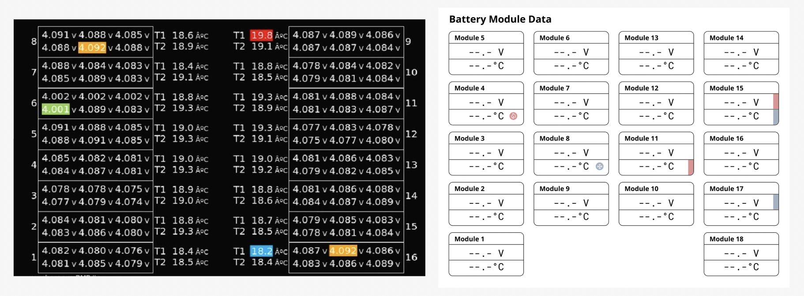
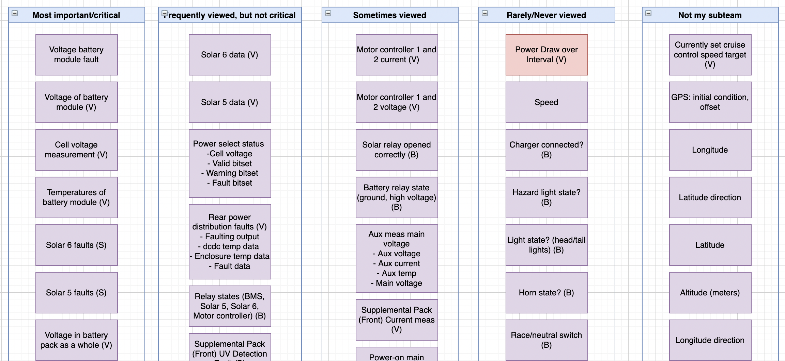
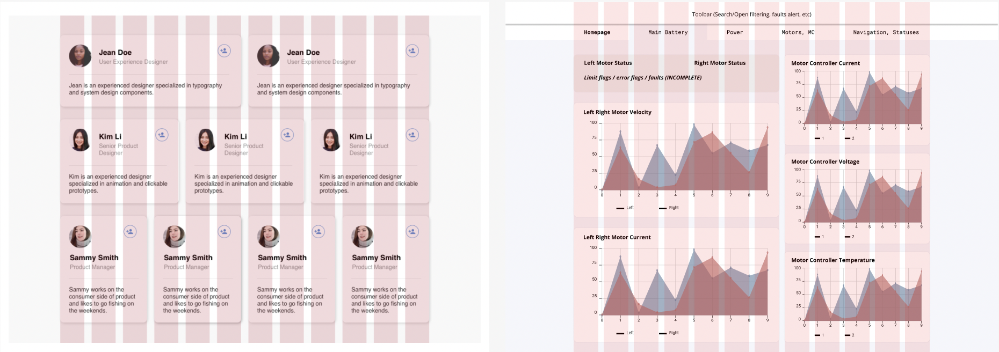
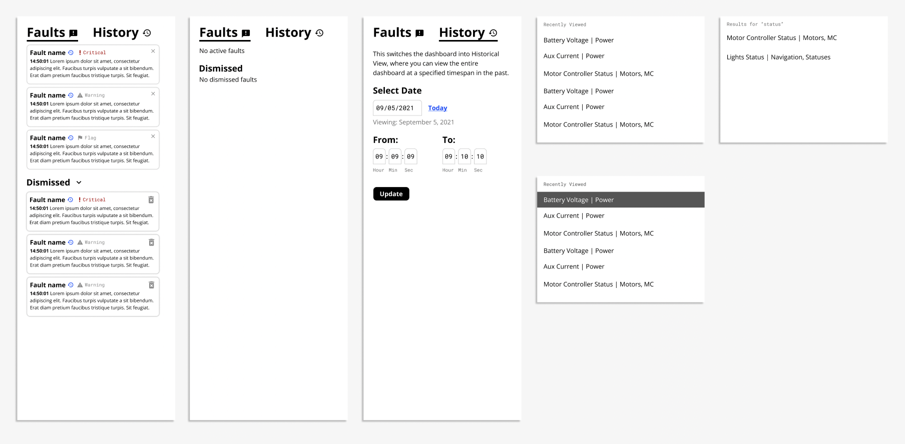

Purpose
The solar vehicle telemetry dashboard’s primary application is to display live-streamed important vehicle information pertaining to hardware and firmware data. This helps in debugging vehicle failures during the races and aids in strategy (i.e. developing the best course of action for the vehicle through navigation/route information)
Research Timeline
The research and design of the Telemetry Dasboard was separated into 5 primary phases as listed below. Each phase will be outlined in more detail.
Background Research
.
.
Exploratory Interviews
.
.
Planning
.
.
Design
.
.
User Testing
Background Research
The primary goals of this phase were to understand more about user needs and learn more about data visualization practices, and dashboard design.
User needs were defined as what the user is using the dashboard for, and primary issues & pain points they may have encountered in existing dashboards. Through conversations with users, we established a list of collected vehicle CAN (Controller Area Network) data and primary use cases for the dashboard.
When learning about and collecting resources on data visualization best practices, we had to consider scalability and responsiveness. The dashboard contains an extremely overwhelming amount of data so understanding how to display this in the most comprehensive manner was vital.
I led a competitive analysis on previous iterations of the telemetry dashboard as well as various other solar vehicle design team dashboards. Outside of solar race teams, we analyzed solar vehicle data displays as seen in Tesla.
Battery pack visualization inspiration pulled from from the "Reading Battery Voltages and Temperatures via CAN on Model S" thread at Tesla Motors Club. The debug view (left) highlights the min/max cell voltage and temperatures. Compared alongside rough wireframe (right).
Data visualization research consisted of graph and table visualization types and best practices as well as how different data types (string, integer, Boolean (TRUE/FALSE)) can be displayed.
Exploratory Interviews
I led and participated in various exploratory user interviews to discuss needs, previous experiences, and to engage in card-sorting exercises. Interview guides were created and customized based on user experience. Leads from different areas of the solar car team were tasked with sorting approximately 60 cards containing data from the list established during the background research phase. These data points were then assigned rankings based on how the leaders classified them and which leaders will be using the dashboard the most.
Some cards sorted by Midnight Sun's Battery System & Hardware Lead
Planning
The planning phase was relatively short where the primary goals were to understand pain points of the users and to formalize the scope and goals of the project. We compiled and organized research findings through affinity diagramming and isolated main points to prioritize. Features were defined for screens and components we needed to design. Finally, we completed information architecture mapping and grouping to understand user and screen flows with basic design sketches.
Design
Using cards or “containers”, we decided on fitting one graph/table or stacking collections of statuses for each card. This allows for a flexible, modular design that can handle multiple iterations resulting from firmware and hardware team rearrangement requests. We focused on using a column/grid system consisting of 12 columns (72px) with 24px gutters. To reduce issues in modifying aspect ratios and keeping the layout clean, cards must begin and end where columns begin and end.
Column system displayed with placeholder cards (left) alongside dashboard wireframe (right)
My primary focus of the wireframing consisted of the hardware pages, classified into main battery data, power, and motor information. I worked additionally on warning statuses and the pop-out sidebar.
Sidebar design with statuses
User Testing
In this phase, we consistently ran design iterations by relevant team leads to gather feedback and re-design based on their needs. The user testing and design phases toggled back and forth to ensure that the design met our initial goals.